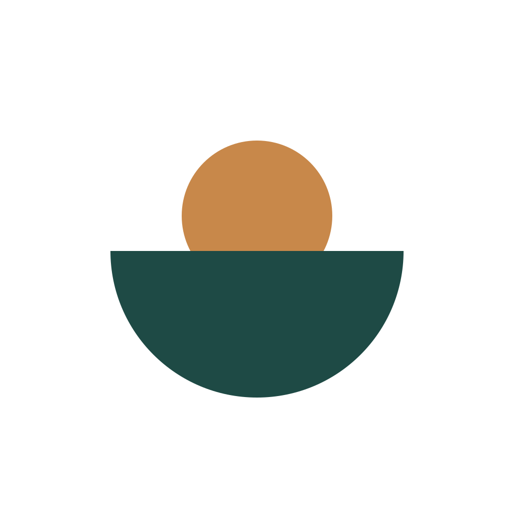

Versorgung in Echtzeit
Du versorgst in dieser Phase mehr als dich allein. NourishMe sagt dir nach jeder Mahlzeit, was dich und die Kinder gut hält: „Dir fehlen noch 30 g Protein, eine Lachs-Bowl mittags wäre passend." Kein Rechnen, kein Googeln.

In Schwangerschaft und Stillzeit versorgst du mehr als dich allein. NourishMe sagt dir live, was du brauchst, damit du und die Kinder gut versorgt sind. Ohne Kalorienzählen, ohne Bodybuilder-Logik.
Beta-Zugang anfordern Wie es funktioniert →
„Schon in der Schwangerschaft merkte ich: ich versorge mehr als mich. Jeder Nährstoff geht erst an die Kinder. Aber keine App sagte mir live, wie ich uns alle gut versorgen kann. Aus dieser Lücke ist NourishMe entstanden." Vanessa, Mama von Carl und Leo

Vor 14 Wochen lag ich im Wochenbett, zwei Babys auf der Brust, der Hunger eines kleinen Wolfsrudels im Kopf. Aber angefangen hat es schon in der Schwangerschaft.
Ab dem ersten Trimester war mir klar: ich versorge jetzt mehr als mich. Jeder Nährstoff geht erst an die Kinder, in der Schwangerschaft über die Plazenta, danach über die Milch. Ich muss selbst gut versorgt sein, damit das ganze System läuft, und kann nicht mal eben „eine Mahlzeit auslassen". Was ich gebraucht hätte: eine App, die mir live sagt, was uns alle gut versorgt. Was es gab: Kalorienzähler für Abnehmende und Bodybuilder. Apps für Schwangere endeten am Tag der Geburt. Apps für Stillende rechneten pauschal „+500 kcal", egal ob ein Kind oder Zwillinge.
Also habe ich angefangen, mir was zu bauen. Auf Basis von DGE, BfR, EFSA und LactMed. Berechnet auf meine genaue Situation. Mit einem Coach, der nach jeder Mahlzeit sagt, was als Nächstes sinnvoll wäre. Es hat mir geholfen, und ist so gebaut, dass es zu allen Müttern und werdenden Müttern in dieser Phase passt.
— Vanessa
NourishMe berechnet deinen Bedarf aus deinen tatsächlichen Daten, nicht aus einer Tabelle.
Du versorgst in dieser Phase mehr als dich allein. NourishMe sagt dir nach jeder Mahlzeit, was dich und die Kinder gut hält: „Dir fehlen noch 30 g Protein, eine Lachs-Bowl mittags wäre passend." Kein Rechnen, kein Googeln.
Trimester, Anzahl gestillter Kinder, exklusives Pumpen, dein tatsächliches Milchvolumen. Zwillinge exklusiv? +1.260 kcal, nicht „+500".
Jede Empfehlung hat eine Quelle: DGE 2025, BfR, EFSA, LactMed, FDA/EPA. Ein Tap zeigt sie. Kein Konto, kein Cloud-Sync, alles lokal.
NourishMe ist in TestFlight-Beta. Egal mit einem Kind oder Mehrlingen, schwanger oder im Wochenbett, stillend oder pumpend, wenn du in einer dieser Situationen bist und Lust hast zu testen, melde dich.
Du bekommst eine Einladung per E-Mail sobald die Beta live ist. Kein Spam, kein Newsletter, nur diese eine Einladung und gelegentlich eine Bitte um Feedback.
PS: Die App startet auf Deutsch. Englische Version folgt in den nächsten Wochen.
Alle Schwellenwerte und Empfehlungen basieren auf:
NourishMe ist kein medizinisches Produkt und ersetzt keine ärztliche oder hebammenbasierte Beratung. Bei medizinischen Fragen wende dich an deine Ärztin oder Hebamme.